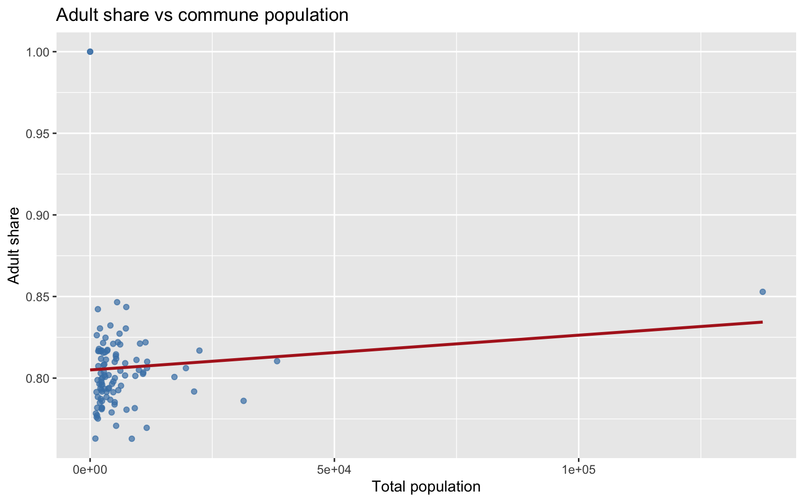
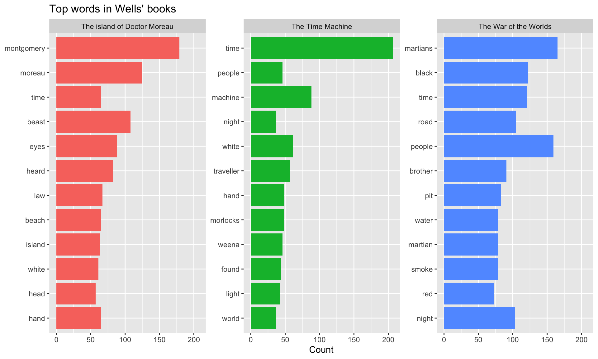

adult_share is computed as adults divided by total population.
filter(adult_share < 0.80) keeps only communes below 80%.
Sorting helps inspect which communes have the lowest adult shares.
1.4 Exercise 4
Task: Create a histogram of total_population and describe the shape.
pop |>mutate(total_population = FEMMES_MINEURES + HOMMES_MINEURS + FEMMES_MAJEURES + HOMMES_MAJEURS ) |>ggplot(aes(x = total_population)) +geom_histogram(bins =25, fill ="steelblue", color ="white") +labs(title ="Distribution of commune population",x ="Population per commune",y ="Number of communes" )

Interpretation note:
The histogram is typically right-skewed.
Most communes have smaller populations, with a few much larger communes.
extra_top_words <- extra_book |>unnest_tokens(word, text) |>anti_join(stop_words, by =join_by(word)) |>count(title, word, sort =TRUE) |>slice_head(n =20)extra_top_words
# A tibble: 20 × 3
title word n
<chr> <chr> <int>
1 Tom Swift circling the globe; or, The daring cruise of the Air M… tom 815
2 Tom Swift circling the globe; or, The daring cruise of the Air M… ned 310
3 Tom Swift circling the globe; or, The daring cruise of the Air M… swift 178
4 Tom Swift circling the globe; or, The daring cruise of the Air M… time 129
5 Tom Swift circling the globe; or, The daring cruise of the Air M… craft 128
6 Tom Swift circling the globe; or, The daring cruise of the Air M… _air 116
7 Tom Swift circling the globe; or, The daring cruise of the Air M… mona… 114
8 Tom Swift circling the globe; or, The daring cruise of the Air M… mach… 104
9 Tom Swift circling the globe; or, The daring cruise of the Air M… pelt… 90
10 Tom Swift circling the globe; or, The daring cruise of the Air M… i’m 85
11 Tom Swift circling the globe; or, The daring cruise of the Air M… cried 83
12 Tom Swift circling the globe; or, The daring cruise of the Air M… mary 83
13 Tom Swift circling the globe; or, The daring cruise of the Air M… air 71
14 Tom Swift circling the globe; or, The daring cruise of the Air M… don’t 70
15 Tom Swift circling the globe; or, The daring cruise of the Air M… inve… 69
16 Tom Swift circling the globe; or, The daring cruise of the Air M… we’ll 67
17 Tom Swift circling the globe; or, The daring cruise of the Air M… water 62
18 Tom Swift circling the globe; or, The daring cruise of the Air M… i’ll 61
19 Tom Swift circling the globe; or, The daring cruise of the Air M… it’s 56
20 Tom Swift circling the globe; or, The daring cruise of the Air M… speed 56
Why this works:
gutenberg_works(language == "en") |> slice_sample(n = 1) selects one random English work.
unnest_tokens() creates one-token-per-row format.
anti_join(stop_words, by = join_by(word)) removes common function words.
count(sort = TRUE) yields frequency ranking directly.
2.2 Exercise 2
Task: Download the first 3 works by Wells, H. G. (Herbert George), create a token table, then build a three-book dataset and compare top words.
wells_works <-gutenberg_works(author =="Wells, H. G. (Herbert George)") |>arrange(gutenberg_id) |>slice_head(n =3)wells_books <-gutenberg_download(wells_works$gutenberg_id, meta_fields ="title")wells_tokens <- wells_books |>unnest_tokens(word, text) |>anti_join(stop_words, by =join_by(word))wells_top <- wells_tokens |>count(title, word, sort =TRUE) |>group_by(title) |>slice_head(n =12) |>ungroup()wells_top |>mutate(word =fct_reorder(word, n)) |>ggplot(aes(x = n, y = word, fill = title)) +geom_col(show.legend =FALSE) +facet_wrap(vars(title), scales ="free_y") +labs(title ="Top words in Wells' books",x ="Count",y =NULL )

Interpretation note:
gutenberg_works(author == "Wells, H. G. (Herbert George)") returns metadata (including IDs) for that author.
arrange(gutenberg_id) |> slice_head(n = 3) keeps the first three works by Gutenberg ID.
wells_tokens gives a mini-corpus for Wells, and bind_rows() combines it with previously prepared token tables.
Shared high-frequency content words may reflect common literary vocabulary.
Distinctive words often point to characters, setting, or genre themes.
2.3 Exercise 3
Task: Compute tf-idf and interpret high tf-idf words for the Wells corpus.
wells_tfidf <- wells_tokens |>count(title, word, sort =TRUE) |>bind_tf_idf(word, title, n) |>arrange(desc(tf_idf))wells_tfidf |>group_by(title) |>slice_head(n =10) |>ungroup() |>select(title, word, n, tf_idf)
# A tibble: 30 × 4
title word n tf_idf
<chr> <chr> <int> <dbl>
1 The Time Machine traveller 57 0.00556
2 The Time Machine morlocks 48 0.00468
3 The Time Machine weena 46 0.00448
4 The Time Machine machine 88 0.00317
5 The Time Machine sphinx 24 0.00234
6 The Time Machine psychologist 23 0.00224
7 The Time Machine bronze 19 0.00185
8 The Time Machine gallery 19 0.00185
9 The Time Machine match 19 0.00185
10 The Time Machine matches 19 0.00185
# ℹ 20 more rows
Interpretation guideline:
High tf-idf means a word is frequent in one text but not frequent across all texts.
Character names and topic-specific words are common high tf-idf candidates.
2.4 Exercise 4
Task: Compute bigrams for one selected book and list frequent non-stopword bigrams.
# A tibble: 3 × 4
title total_tokens unique_tokens lexical_diversity
<chr> <int> <int> <dbl>
1 The Time Machine 11268 4172 0.370
2 The island of Doctor Moreau 15629 4897 0.313
3 The War of the Worlds 22868 6352 0.278
Interpretation note:
Higher lexical diversity means a larger share of unique words.
The metric is sensitive to document length and genre.